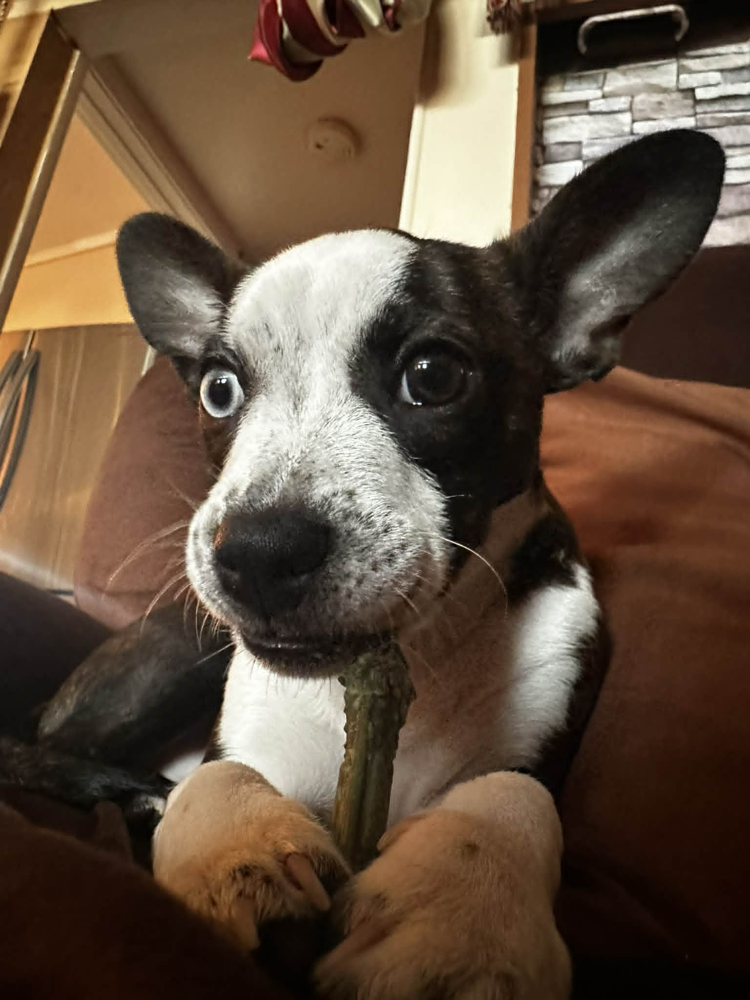
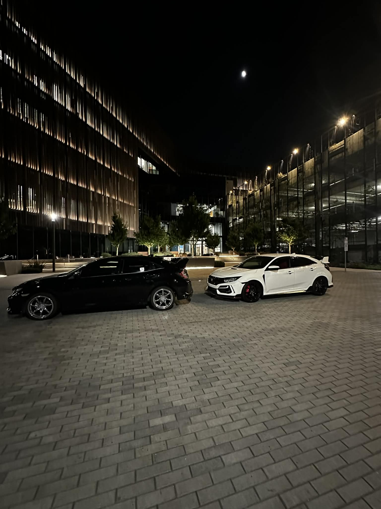

Mohit Kumar - DB Engineer
Hello, I am Mohit Kumar! I am the team's Database Engineer. I am currently a senior at San Francisco State University, majoring in Computer Science and minoring in Data Science. I love to watch movies, anime, and play video games! I also enjoy listen to music and playing a lot of different intsruments. In this photo I am with my girlfriend.

Oreo!
This is my dog Oreo! He is a 6 month old Chihuahua/Frenchie mix. I've always loved animals and I want to have more dogs and get bunnies in the future. Oreo is my first dog ever and I love him so much! He is very playful and loves to cuddle. And an unique thing about him is that he has heterochromia, which means his eyes are two different colors! One eye is blue and the other is brown.

Cars, cars, cars!
Another thing about me is that I love cars! My friends and I always go for togues(mountain races) and car meets. One of the reasons I went into CS is so that I can afford to a bunch of nice/project cars in the future. My car is in black and my friend is the white one! We are both working on them and have done a ton of mods to them!